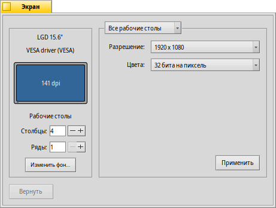

Русский
Русский Français
Français Deutsch
Deutsch Italiano
Italiano Español
Español Svenska
Svenska 日本語
日本語 Українська
Українська 中文 ［中文］
中文 ［中文］ Português
Português Suomi
Suomi Slovenčina
Slovenčina English
EnglishЭкран (Screen)
| Расположение в Deskbar: | ||
| Расположение в Tracker: | /boot/system/preferences/Screen | |
| Настройки хранятся по адресу: | ~/config/settings/system/app_server/workspaces ~/config/settings/kernel/drivers/vesa - только для активного ВЕЗА режима. ~/config/settings/Screen_data - сохраняется положение окон. |
Each of your workspaces can have its own resolution, color depth and refresh rate.
The top menu specifies if your changes are applied only to the current or to all workspaces. Depending on your graphics card, the other menus contain all supported resolution, color depth and refresh rate settings.
После нажатия кнопки графический режим сменится и появится окно для подтверждения сделанных изменений. Если вы их не подтвердите, то графический режим через 12 секунд вернётся к предыдущим настройкам, так как имеется вероятность, что вы не увидите это окно, если применённые настройки не поддерживаются вашим монитором.
Слева вы можете задать количество рабочих столов в порядке их расположения ( и ) и открыть настройки Фона.
Кнопка возвращает установки, которые были активны при открытии окна настроек экрана.
To the bottom left you can set the number of workspaces and arrange them in columns and rows and open the Backgrounds preferences.